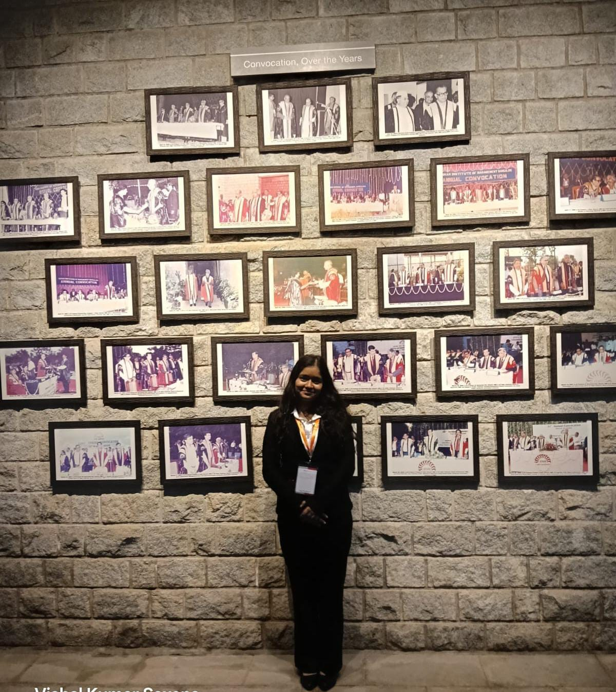
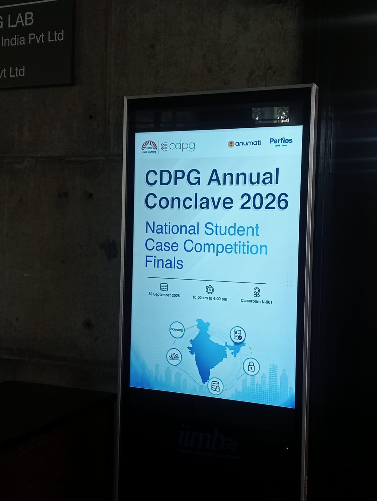

2026—29
Indian Institute of Management Bangalore
BBA — Digital Business & Entrepreneurship
A student of business & everything in between
I'm Manvi — studying Digital Business & Entrepreneurship at IIM Bangalore, collecting questions, trying things, and making room for both business and creativity.

Business-minded, creatively restless, and interested in the space where ideas become something real.
I’m drawn to work that lets me think, make, and communicate.
Business, marketing and strategy interest me for the way ideas meet people and the real world. Writing gives me a way to make sense of what I notice. And I’m curious about the tools that make new kinds of creation possible.
I’m still exploring the shape of the career I want. What I know is that it should leave space for thoughtful work, creative freedom and a little experimentation.
BBA — Digital Business & Entrepreneurship
CBSE Class XII · 80%
Physics, Chemistry, Mathematics, Physical Education & Hindustani Music (Vocals)
CBSE Class X · 94.6%
✳ Recipient of a merit- and academic-performance-based school scholarship.
CURRENTLY LEARNING ON THE JOB
Fault Labs AI
Working with the founder’s office at Fault Labs AI. This is an ongoing experience, and a chance to learn from the inside as I build a clearer understanding of how a business operates.
INTERNSHIP · FOUNDER’S OFFICENATIONAL CASE COMPETITION · 2026

01 — THE FINALS · 30.09.2026
CDPG Annual Conclave 2026
National Student Case Competition
THE CHALLENGEDesign a financial advisor for a household earning ₹30,000 per month.
With Team Pungibunch, I worked on the Policy and Regulations track. Rather than building an app or website, we chose to stay close to the track and develop a policy and regulatory architecture, supported by a proposed solution architecture and business model.
My contribution centred on research, strategy and presenting our work on the final day.
Not every experience needs a trophy to teach you something.
NCC A Certificate. An experience in discipline, physical training, confidence and endurance.
Position of responsibility at Sacred Hearts Public School.
IIT Delhi Mystery Business Challenge — first round. NSUT Delhi Business Quiz — selected for the offline round; unable to attend due to a scheduling conflict.
Participant.
A PERSONAL CORNER OF THE INTERNET
A place for thoughts, feelings and stories — personal enough to mean something, open enough for someone else to find a little of themselves in them.
Read on Substack ↗TOOLS I USE
CURRENTLY EXPLORING
A growing toolkit, not a list of things I've mastered.
The more you larp,A line worth keeping.
the less you larp.